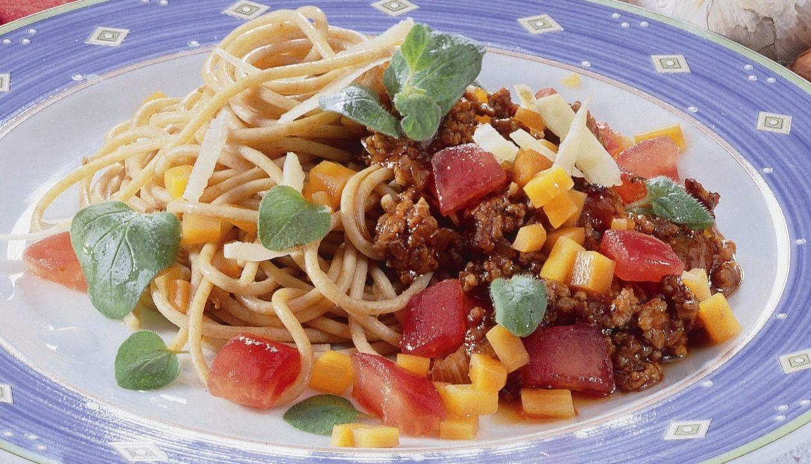

Spaghetti

Beschreibung
Das ist ein Rezept für sehr leckere Spaghetti für mehrere Personen
Nachstehend sind sowohl die Zutaten als auch die Zubereitung beschrieben
Zutaten
- 2 TL Olivenöl
- 2 EL frisch geriebener Parmesankäse, 30-35 % Fett i.Tr.
- 120 g Rinderhackfleisch
- 170 g Vollkorn-Spaghetti
- 100 ml Gemüsebrühe
- 2 Prise Rohzucker
- 2 Schalotten
- 2 Knoblauchzehen
- 1 Karotte
- 3 Tomaten
- Paprikapulver, Cayennepfeffer, schwarzer Pfeffer, Kräutersalz
- frischen Oregano, Majoran,Thymian
- 4 Nektarinen
-
Das Öl in einer Pfanne erhitzen und das Hackfleisch darin anbraten.
-
Die Schalotten schälen und in feine Ringe schneiden. Die Knoblauchzehen schälen und fein hacken. Beides zum Hackfleisch geben und kurz mitdünsten.
-
Die Karotte putzen, waschen und grob raspeln.
-
Die Tomaten mit heißem Wasser überbrühen, kalt abschrecken, enthäuten, in Würfel schneiden und mit der geraspelten Karotte ebenfalls in die Pfanne geben und mitdünsten. Die Gemüsebrühe angießen. Mit Paprikapulver, Cayennepfeffer, Pfeffer, Kräutersalz, Zucker, frischem Oregano, Majoran und Thymian würzen.
-
Die Hackfleischsauce bei milder Hitze 10-15 Minuten köcheln lassen.
-
Die Vollkorn-Spaghetti in Salzwasser al dente kochen.
-
Die Vollkorn-Spaghetti abgießen, anrichten und mit der Hackfleischsauce servieren. Mit dem Parmesankäse bestreuen.
-
Als Nachtisch können Sie Nektarinen servieren oder auch anderes frisches Obst der Saison nehmen.
-
Tipp: Statt frischer Kräuter können Sie auch eine italienische Kräutermischung aus der Tiefkühltruhe verwenden. Achten Sie darauf, dass das Rinderhackfleisch mager ist. Wenn Sie Vollkorn-Spaghetti nicht gewöhnt sind: Versuchen Sie es doch mal, indem Sie 50 % der hellen Spaghetti durch Vollkorn-Spaghetti ersetzen.